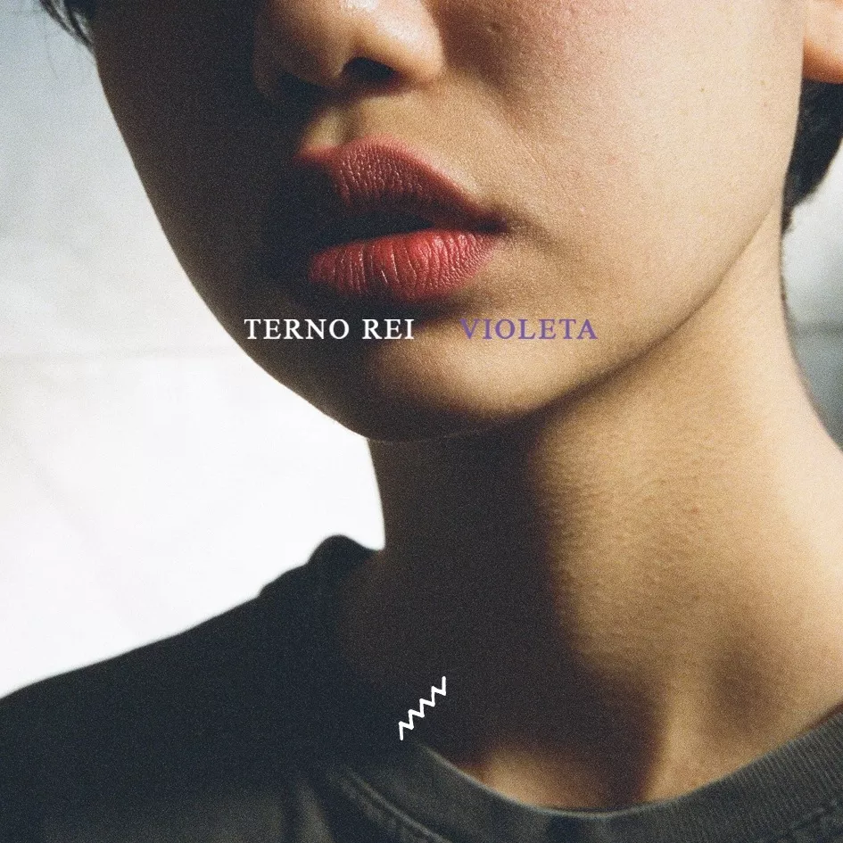

E quando eu já não via mais esperanças lembrei que eu tenho ouvidos, através deles eu renovei minhas esperanças
atrás das experiências de pessoas que passaram pelo menos processo que eu.
Dói saber
Algo que mais ninguém
Parece entender
Sobre você
Scalene - Furta-Cor (part. Xenia França)
I, I want you back (back)
Let's get back
Lay my weary head against your breast
Where all my troubles will be laid to rest
Sweetie Little Jean - Cage The Elephant

Agarre e não largue essa mão
Se nos der sorte, vai levar a São João
Toda noite eu quero que você
Diga que a vida foi feita pra viver
Pontos de Exclamação - Jovem Dionisio
E quero me jogar nesse azul
No infinito desses braços
Pois aqui me sinto livre
Eu aqui me sinto em casa
Eu aqui me sinto inteiro
Yoko - Terno Rei
